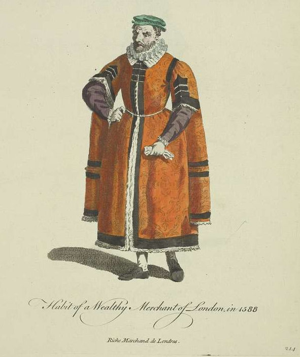

The pursuit of wealth and the enjoyment of life
The paradox suggested by this thought, namely, that all the economic process does is to transform valuable matter and energy into waste, is easily and instructively resolved. It compels us to recognize that the real output of the economic process (or of any life process, for that matter) is not the material flow of waste, but the still mysterious immaterial flux of the enjoyment of life.
Georgescu-Roegen (1975)
Humans are unique in their possession of complex psychological needs alongside material ones. While other animals, like a chimpanzee or a dog, might experience boredom in captivity, their needs are largely physical, centred on survival and well-being. In contrast, humans seek psychologically stimulating activity. Even the earliest hunter-gatherer societies valued symbolic objects like beads and ornaments, establishing wide-ranging trade networks across hundreds of kilometres in Sub-Saharan Africa to acquire them (Koleini et al. 2019; Crowther et al. 2016). The prevalence of religion and shamanistic beliefs, evidenced by cave paintings around the world, further demonstrates that human needs extend far beyond mere physical preservation.
The very idea of wealth is therefore unusual. If people can live in comfort without a great abundance of goods—that is, without being rich—why has the pursuit of wealth played such a dominant role in culture throughout history? Here, a distinction between prosperity and wealth could be useful. We can define prosperity as possessing sufficient material goods to enjoy lasting material well-being. Wealth, on the other hand, is the accumulation of material goods beyond prosperity—that is, beyond what is needed for a comfortable life. From this distinction it follows that, if prosperity satisfies humanity’s physical needs, the purpose of wealth is not material well-being, but the fulfilment of psychological desires.
Following this logic, poverty can be understood as the lack of prosperity. If there is a moral imperative to reduce poverty, then its goal should be to ensure as many people as possible become prosperous, though not necessarily wealthy. Of course, the accumulation of wealth is just one of many ways people seek psychological fulfilment. Some find it in study, service, spirituality or their work—and for most, satisfaction comes from a combination of these and other pursuits. The danger arises when an individual, or an entire society, continues to pursue wealth long after achieving prosperity. While consumption and investment may stimulate economic activity that benefits those still in poverty, a society that crosses the threshold into mass wealth risks tying its collective sense of well-being to the endless pursuit of luxury. In other words, it risks becoming consumed by greed, a condition where not only the wealthy but also the prosperous and even the poor seek to maximize their possessions at any cost—not to live well, but simply to be rich.

.jpg){kind=link}
Beyond the social harms of a greedy society—where injustice is readily committed for personal gain—lies a more fundamental problem. The earth’s ecosystem has finite resources and a limited capacity to regenerate. When human populations were small, greedy societies like ancient empires endangered their own civilizations but not necessarily the entire planet. Today, however, historic population growth combined with a global tendency to equate psychological satisfaction with material gain has led to a visible and dangerous environmental overload. Theorists like Boulding and Georgescu-Roegen (quoted in the epigraph above) warned of this in the twentieth century, and a growing chorus of scientists and activists has since joined them. The issue is psychological. Just as a desperately thirsty person might knowingly drink contaminated water to satisfy an urgent physical need, a person driven by greed can ignore clear and present dangers to satisfy that psychological compulsion. No amount of scientific evidence or moral reasoning will deter someone who has made the accumulation of wealth a basic psychological necessity. The root of the climate crisis, therefore, appears to be more moral than technical. The widespread refusal to protect the environment and challenge injustices committed in the name of wealth stems not from a failure to understand the evidence, but from a deep-seated unwillingness to accept its implications. To accept the science would mean renouncing what has become for many a primary life purpose: the pursuit of riches.
Resolving this problem is profoundly difficult. Binding political decisions could in theory be taken, such as the measure that successfully phased out chlorofluorocarbons in the late 1980s and prevented the ozone layer from continuing to degrade at the alarming pace it had been (Velders et al. 2007). At that time, for nearly twenty years, chemical industries—especially DuPont, the makers of CFCs—resisted regulation tooth and nail, claiming there was no evidence that CFCs were destroying the stratosphere. When the evidence finally became undeniable, governments around the world acted with surprising speed and determination. Yet replicating that experience today is far more difficult. Replacing CFCs was relatively straightforward; climate change is not as immediately visible as the ozone hole once was; and fossil fuel industries wield immense lobbying power, reinforced by the fact that many developing countries rely on oil and coal exports for their survival and that of their political elites. Moreover, even if national measures were taken in a democratic country, their effect would at best be negligible (since the largest emitters are non-democratic states) and, at worst, they would be repealed by later governments to placate social discontent over the resulting economic slowdown.
While the world’s future may depend heavily on the actions of major global powers, this does not render individual and local action powerless. We can still do much to live well and help others do so within our own spheres of influence. Above all, we can strive to resist the lure of greed and instead cultivate a more sustainable vision of a prosperous life.